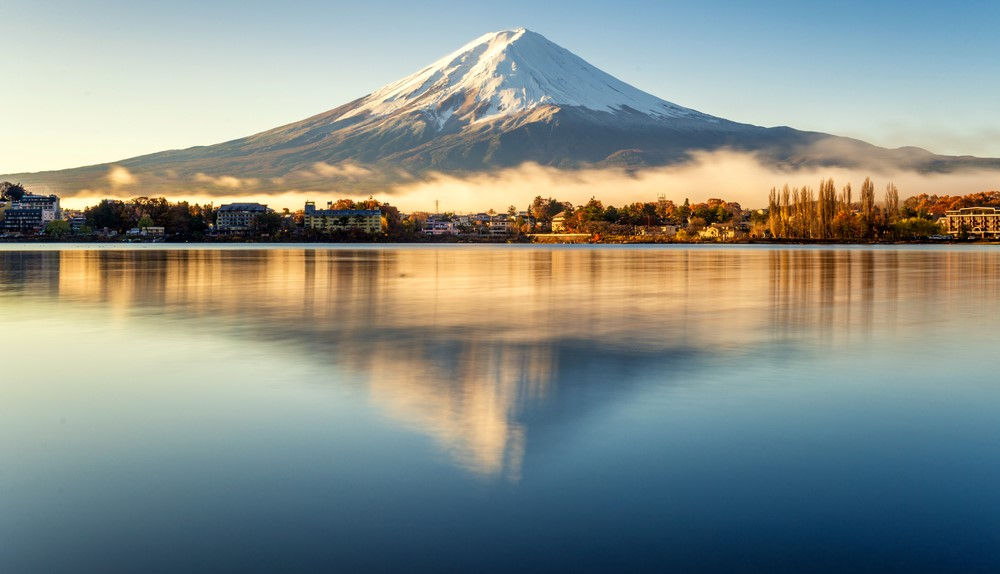
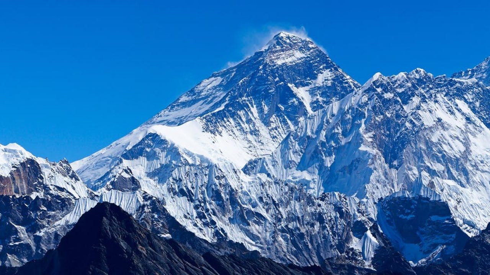
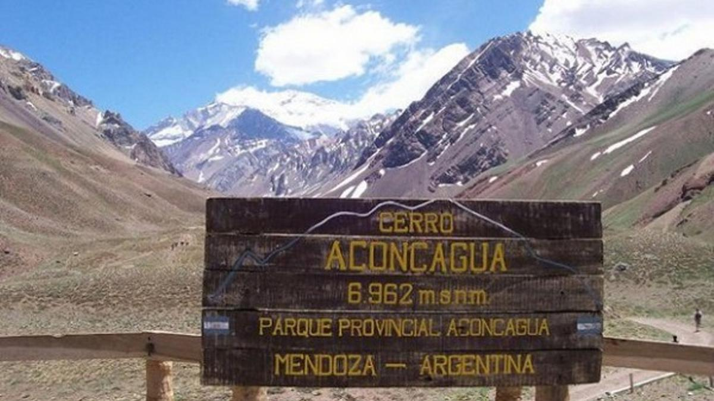
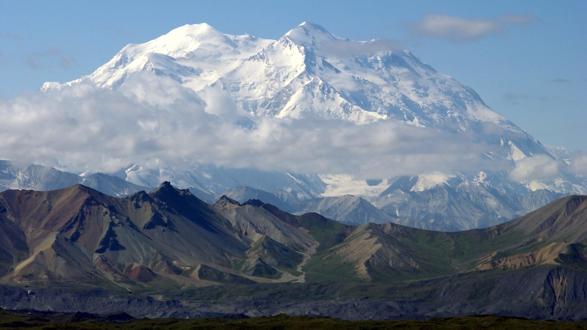

Gunung Fuji (3.77g mdpl) kepulauan Honshu,Jepang
Di alam semesta ini terdapat begitu banyak keajaiban dan keindahan yang mempesona. Salah satu keindahan
yang menarik perhatian banyak orang adalah gunung-gunung yang memiliki ketinggian yang sangat tinggi.
Ada banyak gunung di seluruh dunia yang menantang dan memberikan pengalaman yang tak terlupakan bagi
para pendaki.
Bagi para pendaki semakin tinggi gunung tersebut semakin besar juga tantangan dan kebanggan mereka
apabila berhasil mencapai puncak dari gunung tersebut,nah berikut adalah 3 gunung tertinggi didunia saat
ini.
1. Gunung everest

Gunung Everest (8.848 Mdpl) Lokasi di Zona Sagarmatha, Nepal-Tibet, perbatasan Tiongkok
Gunung Everest adalah gunung tertinggi di dunia dengan ketinggian mencapai 8.848 meter di atas
permukaan laut. Terletak di Himalaya, antara negara Nepal dan Tibet, gunung ini telah menjadi tujuan
yang sangat populer bagi para pendaki dan penjelajah sejak pertama kali berhasil didaki oleh Sir
Edmund Hillary dan Tenzing Norgay pada tahun 1953. Everest juga dikenal dengan nama "Sagarmatha" di
Nepal dan "Chomolungma" di Tibet.
Gunung Everest memiliki medan yang sangat sulit bagi para pendaki yang ingin mencapainya. Medan yang
terjal, suhu yang sangat dingin, serta tingkat ketinggian yang sangat tinggi, semuanya menjadi
tantangan bagi para pendaki. Meski begitu, keindahan pemandangan di sekitar gunung ini sangat
memukau dan banyak orang yang merasa bahwa pengalaman mendaki Everest merupakan hal yang sangat
memuaskan dan membanggakan. Namun, pendakian ke gunung ini juga memiliki risiko yang tinggi,
termasuk risiko kesehatan seperti AMS (Acute Mountain Sickness) yang dapat menjadi fatal jika tidak
diatasi dengan tepat.
2. Gunung Aconcagua

Gunung Aconcagua (6.961 Mdpl) Lokasi di Zona Sagarmatha, Nepal-Tibet, perbatasan Tiongkok
Gunung Aconcagua adalah gunung tertinggi di luar Himalaya, dengan ketinggian mencapai 6.962 meter di
atas permukaan laut. Terletak di kawasan Andes, negara Argentina, gunung ini telah menjadi tujuan
yang sangat populer bagi para pendaki dan penjelajah sejak pertama kali didaki pada tahun 1897 oleh
sekelompok pendaki Swiss. Aconcagua juga merupakan salah satu dari tujuh puncak tertinggi di dunia
(Seven Summits).
Meskipun tidak sepopuler Everest, pendakian ke Aconcagua tetap menjadi tantangan yang serius bagi
para pendaki. Terdapat berbagai rute pendakian yang bisa dipilih, namun semuanya memiliki medan yang
cukup sulit dan membutuhkan kondisi fisik yang prima serta persiapan yang matang. Selain itu,
tingkat ketinggian yang tinggi juga memperbesar risiko kesehatan seperti AMS (Acute Mountain
Sickness) dan hipotermia.
Namun, bagi para pendaki yang berhasil mencapai puncak Aconcagua, pemandangan di sekitar gunung ini
sangat memukau dan sangat memuaskan. Gunung ini juga memiliki ekosistem yang sangat beragam, mulai
dari padang rumput yang luas hingga gletser dan salju abadi di puncaknya.
3. Gunung Denali

Gunung Denali (6.144 Mdpl) Lokasi Denali National Park and Preserve, Alaska, AS
Gunung Denali atau juga dikenal sebagai Gunung McKinley adalah gunung tertinggi di Amerika Utara,
dengan ketinggian mencapai 6.190 meter di atas permukaan laut. Terletak di negara bagian Alaska,
Amerika Serikat, gunung ini telah menjadi tujuan yang sangat populer bagi para pendaki dan
penjelajah sejak pertama kali didaki pada tahun 1913 oleh sekelompok pendaki Amerika. Denali juga
merupakan salah satu dari tujuh puncak tertinggi di dunia (Seven Summits).
Pendakian ke Denali merupakan tantangan yang cukup sulit, meskipun tingkat ketinggiannya tidak
seberapa tinggi dibandingkan dengan gunung tertinggi lainnya. Terdapat berbagai rute pendakian yang
bisa dipilih, namun semuanya memiliki medan yang cukup ekstrem dan membutuhkan kondisi fisik yang
prima serta persiapan yang matang. Suhu yang sangat dingin dan angin kencang juga menjadi tantangan
tersendiri bagi para pendaki.
Namun, keindahan pemandangan di sekitar Gunung Denali sangat memukau dan sangat memuaskan. Gunung ini
dikelilingi oleh padang rumput yang luas, hutan belantara, gletser, dan salju abadi yang membentang
sejauh mata memandang. Selain itu, keberhasilan dalam mendaki Gunung Denali juga menjadi prestasi
yang sangat membanggakan bagi para pendaki.